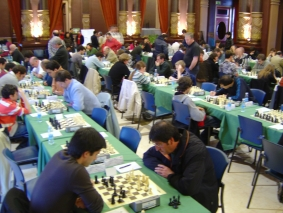

Club de Ajedrez Agustín de Leiza |
| » inicio » socios del club » cto. por equipos » últimos torneos » enlaces |
Open de San Sebastián 200912-04-08Como es tradición esta Semana Santa se ha celebrado en Open de San Sebastián, como en los últimos años en el marco icomparable del salón de actos del ayuntamiento Donostiarra. Este año solo lo ha jugado Espín que ha acabado empatado en el puesto 71, y aunque ha perdido algún que otro punto Elo, ha luchado todas las partidas hasta el final y ha desperdiciado ventajas en varias partidas. 
Espín jugando en la ronda 8 con el resto de la sala de fondo. Respecto al torneo en general ha sido reseñable el alto nivel de jugadores y jóvenes promesas que han tomado parte en la presente edición. El número 1 del torneo era GM Alexander Delchev con un Elo de 2648, y que no pudo hacer buenos los pronósticos iniciales, sobre todo por sus tablas ante el MI navarro Mikel Huerga en la penúltima ronda y a la derrota en la última ronda frente al veterano GM Roberto Cifuentes. La clasificación final refleja un quíntuple empate en la primera posición, fiel reflejo de lo reñida que ha estado esta edición.  Vista de las primeras mesas en la ronda 8a. Sin embargo la revelación del torneo, o mejor dicho la confirmación de una promesa, ha sido la actuación del jovencísimo jugador castellano-leonés Jaime Santos Latasa. No es la primera vez que nos visita este chaval nacido en 1996, y esta claro que progresa más que adecuadamente. En esta ocasión ha estado disputando prácticamente todo el torneo en las mesas de los maestros, donde solo perdió frente a la postre uno de los ganadores del torneo, MI Matej Sebenik, ganando a otros dos MIs Diego Suarez e Iñigo Argandoña, y haciendo tablas a 3 GMs Nikita Maiorov, Marko Tratar e Iván Salgado, im-pre-sionante.  Jaime Santos frente al GM Marko Tratar en la 8a ronda, resultado: tablas. |